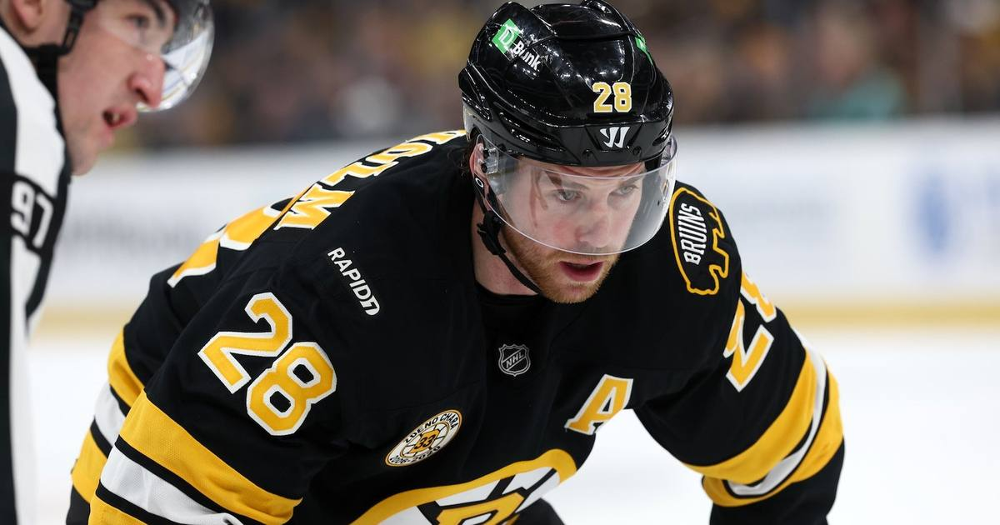

Lindholm scores four as Bruins beat Capitals 7-5
Elias Lindholm scored four goals — the first four-goal game of his NHL career — as the Bruins outlasted the Capitals 7-5 in a wild Saturday night at TD Garden, snapping Boston's three-game home skid.

Disclosure: this post contains affiliate links. I earn a commission on qualifying purchases.
Elias Lindholm had never scored four goals in an NHL game before Saturday night. He fixed that in about two hours, and the Boston Bruins needed every one of them — beating the Washington Capitals 7-5 in a wild, back-and-forth game at TD Garden that snapped Boston's three-game home losing streak.
Lindholm finished with five points on six shots, adding an assist to the four goals, and three of the goals came the same way: deflections in front of the net, the kind of dirty-area work that rarely makes a highlight reel but wins games.
How the night unfolded
Washington struck first. Tom Wilson opened the scoring at 8:03 of the first period, and Boston answered on the power play when David Pastrnak fired a shot from the point and Lindholm tipped it past Charlie Lindgren at 12:42 — four seconds into the man advantage — to tie it 1-1. Alex Tuch's short-handed goal at 15:58 sent the Capitals into the intermission up 2-1.
The second period was chaos: six goals, four of them Boston's. Pastrnak tied it at 2:01, Tanner Jeannot tipped home the go-ahead goal at 6:23, and Lindholm made it 4-2 at 8:54, racing onto a long Morgan Geekie feed — with an assist for goaltender Jeremy Swayman, his first point of the season — and roofing the puck past Lindgren. Washington answered back to 4-4 on goals from Pierre-Luc Dubois and Dylan Strome, but Lindholm completed his hat trick at 18:24, deflecting a Connor Clifton point shot glove-side to send Boston into the third up 5-4.
Elias Lindholm: 4; 1; 5; 6 shots, +3, 19:42
David Pastrnak: 1; 2; 3; Assisted on two of the four
Morgan Geekie: 0; 3; 3; Three assists
Charlie McAvoy: 0; 3; 3; 300th career assist on the night
The fourth came early in the third. At 4:07, Pastrnak set Lindholm up for another tip-in — his second deflection of a Pastrnak shot on the night — and this time the hats finally rained down properly. Jakob Chychrun cut it to 6-5 on a late power play, but Fraser Minten's empty-netter at 18:34 sealed it.
A first in his career
The night was a first on two counts. It was Lindholm's first four-goal game, and the hat trick that came with it was his third in the NHL — but his first since October 2021, so long ago that the TD Garden crowd barely reacted to it. Only one hat hit the ice after the third goal; fans weren't sure it counted until the fourth went in and the hats poured down.
He's now the fourth Bruin since 2000 to score four in a game, joining Patrice Bergeron, Pastrnak, and Marat Khusnutdinov — and the third to do it since 2021. The outburst also capped a hot month: Lindholm has 10 points in eight games in November.
Lindholm laughed about the missing hats afterward. "It was all good," he said. "One was enough. It was all good."
The top line carried it
Lindholm didn't do it alone. The top line of Geekie, Lindholm, and Pastrnak combined for 11 points, with Pastrnak and McAvoy each posting three of their own. Nine different Bruins got on the scoresheet, and Swayman made 30 saves for his 11th win of the season.
The win moved Boston to 15-7-1 and ended a skid that had started to feel like a slide. Washington, which came in having lost four straight, fell to 10-11-0 — and left TD Garden having been beaten, in the end, by a guy standing in front of its net.
Watch
Source: Capitals vs. Bruins | NHL Highlights | Nov 21, 2026 (NHL) — full game highlights of the Bruins' 7-5 win, including all four of Lindholm's goals and Dylan Strome's two-point night for Washington.
Sources
• Elias Lindholm Scores Four Goals in Bruins' 7-5 Win Over Capitals (NHL.com)
• Elias Lindholm Scores 4 Goals As Bruins Soar Past Capitals On Saturday Night (The Hockey News)
• 3 Stars: Elias Lindholm has career-best night for Bruins (98.5 The Sports Hub)
• Bruins Instagram post on Lindholm's first four-goal game (Instagram)
Gear up: Bruins gear (Lindholm No. 28 jerseys, apparel): via Fanatics